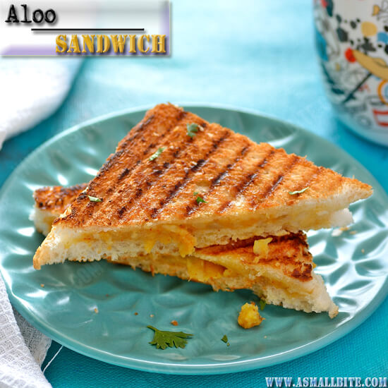

Aloo Sandwich

Description
I first ate this dish from my mom's hands and instantly I was in love with it.
It's a simple dish containing indian spices and boiled & mashed potatoes.
Ingredients
- Bread
- Black Mirch
- Potatoes
- Onion
Directions
- Boil the potatoes for 15 minutes
- Now mash potatoes
- Put an appropriate amount of potatoes on the bread slice
- Now you can put some sliced onions
- After putting the potatoes, put spices according to the taste
- Now after finishing all this, you can put the sandwich in a toaster for 20 min on low heat
- Your Aloo Sandwich is Ready !!!!
Return to Main Page